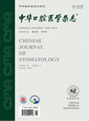
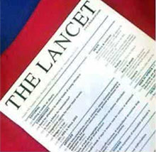

立即使用 和痛痒肿烂说bye!
3～5分钟
快速止痛 吃饭喝水说话聊天不耽误
2～7天
杀病毒除害菌 红肿消失 修复受损口腔粘膜
8～15天
溃疡面和受损粘膜愈合 白色裂纹变淡
1～3个月
构建口腔免疫新屏障 重塑口腔微生态 不复发
因效果出众 敢于无效退款
>>>立即订购
如果你——
经常加班、熬夜、失眠、疲劳、压力大…
抽烟喝酒、小龙虾、生猛海鲜、爱麻辣…
口腔不洁、体弱多病、免疫力低下…
所导致的-复发性口腔溃疡、扁平苔癣、
白塞氏病灼口综合症、唇炎、舌炎、烂嘴、
口疮口腔红肿、白纹、白斑、灼热、灼烧
口腔粘膜破损、溃烂、肿胀…
适合马上订购美生溃乐——
款到发货再享95折
买2得3试用特装
试用任1盒，无效退全款（仅限新用户）
¥936立即订购
买3送2修复套装
专业口腔黏膜障碍修复与护理
¥1398立即订购
买5送3强力巩固套装
专业口腔黏膜障碍修复与护理
¥2340立即订购
马上填写订单，货到付款，2~5天到达
美生溃乐，早一天使用早一天吃香喝辣
1）DA活性分子隔离病毒细菌
2）全面抗菌、抑菌、抗感染
3）草本萃取止痛、止痒、止血、止肿
4）促进溃疡面快速愈合
5）快速修复损伤组织促再生
中华口腔医学研究
中华口腔医学研究会十人专家团一致认定，美生溃乐具有强力渗透，抑菌修复使病变组织损伤变性，促进局部微血管的形成，增加血管内皮细胞膜的通透性，改善其微血管和神经末梢的营养状况，改变局部组织生长的微环境，促进组织的修复、再生从而达到使病变的口腔黏膜得以康复的目的。DA活性分子，加快合成胶原蛋白和细胞间质，有保护创面、杀菌、消炎、生肌、促使黏膜修复的作用，药物集中在溃疡面上，缓慢释放，使局部保证有效的药物浓度，减轻疼痛。改善患处局部血液微循环，促进血管的生长及结缔组织增生，达到加快伤口愈合的作用。
柳叶刀杂志
Dr. Peter DuBois, Executive Director of the American Academy of Dentistry, said that“Meishengkuile is excellent in the treatment of oral diseases, especially recurrent oral ulcers. He nodded and said again,”China has been walking in the forefront of the world in treatment and prevention of oral ulcers, because of the great combination of Oriental Herbal essence and advanced technology.“
国内国际多专利保护
老用户反馈美生溃乐：四大怪
一怪：止痛快：口腔上火“灭火器”，三五分钟止痛，吃喝随意。
二怪：杀菌快：DA活性因子，快速隔绝并杀死治病病毒细菌。
三怪：愈合快：草本萃取精华，靶向作用溃疡面，活血化瘀愈合快、修复迅速。
四怪：免疫强：激活免疫机制、重塑口腔微生态平衡，杜绝复发。
美生溃乐到底怎么样？
金杯银杯不如用户口碑
十几年口腔溃疡，一月就好！
陈勇，程序员 初中开始复发口腔溃疡
作为一个程序猿，从初中起就开始有严重的口腔溃疡而且长时间不愈，经常一长就3 - 6个地方，三个月 才好。长的时候痛得说不了话，张不开嘴，而且是好了这个，冒出那个，10几年了。体坛传媒老大哥再 一次酒局上知晓我的情况，建议我用美生溃乐，一个多月过去了，嘿，虽然还不能说完全好，却好了很 多了，尤其对我困扰最大的就是反复性口腔溃疡，现在基本上好了。如果把这种痛苦分为10分，现在只 有2.5分。整体身体状态，倘若原来严重程度是10分，现在估计也就4分。
高科技老祖方，能吃能喝没烦恼！！
柳丽，30岁，偶发口腔溃疡
三十岁的柳丽近半个月来几乎每天晚上都加班，吃不好饭，睡不好觉，真是累死了。这几天吃东西老觉 得嘴里刺痛，特别是辣的、热的和酸的东西，更是痛得她龇牙咧嘴。一开始用舌头舔了舔，感觉是长了 包，后来对着镜子一看，天哪，嘴巴里好几个红红的圆斑，舌头一碰就痛。母亲一看就说是口腔溃疡， 急忙催女儿去医院检查。柳丽到医院一查，果然是口腔溃疡，接诊医生分析可能是给累出来的。用完美 生溃乐这个方子后，还别说真灵了，第二天就能正常吃东西了，口腔疾病消除一身轻啊。
十来年扁平苔癣 45天痊愈
柯军，公务员，十年扁平苔癣
在政府机关工作的柯先生最近忙于应酬，常常三更半夜才回家，口腔溃疡很快伴发扁平苔癣。每天吃饭、 刷牙都很不方便，稍微碰到溃疡的地方就疼，这些小溃疡虽然不会带来钻心的疼痛，但每天这么折腾， 也足以使他柯军，公务员，十年扁平苔癣烦躁痛苦。他先是到药店买了一盒贴剂治疗，疼痛有所好转， 但是每次应酬总离不开烟酒和油炸咸辣食物，所以，刚好一点又屡屡加重。多年无效后才使用美生溃乐， 几分钟不痛，三天后溃疡面开始愈合，你看到的图片是45天后的样子，很赞吧。
“减肥良方” ，复发口腔溃疡
吴大夫，55岁，4年溃疡史
社区诊所吴大夫两个多月居然瘦了20斤，谁见了都问减肥秘笈。可面对患者的关心，她实在是哭笑不得。 原来，顽固的口腔溃疡已经困扰吴大夫多年了，这两个多月因为病人出奇的多，口腔溃疡频发加重，寝食 难安，体重直线下降。吴大夫用美生溃乐，瑞士科技中药组方疗效好，只要对症下药，再顽固的口腔溃疡 也是能得到长久解决，半年后没复发。
瑞士技术·植物萃取·草本汉方
美生溃乐以品质承诺
无效退款
24小时无忧订货：4008-316-577
28天终结口腔溃疡 扁平苔藓
2~7天 杀病毒除害菌 红肿消失 修复受损口腔粘膜
8~15天 溃疡面和受损粘膜愈合 白色裂纹变淡
1~3个月 构建口腔免疫新屏障 重塑口腔微生态 不复发
美生溃乐·信任保证
推广商：湖南亘古商业有限公司
地址：湖南·长沙·芙蓉·韭菜园街道八一路120号